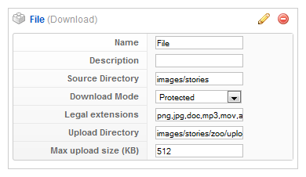

Download Element
In this tutorial you learn how to configure a download element with its specific values to use it in the ZOO extension.
How you create an element like this, we show you in {doc: create-new-types text: this tutorial}.
1. Configuration

Here is the description of the different values:
Name: Type in the name for this element which will be used later on, for example in the item creation view or as label in the frontend. With the name you also can identify the element, when you assign it to a template position.
Description: The description will show up as a tooltip in the item creation view
Source Directory: Type in the source directory from which the files can be selected later when creating an item. It includes all subdirectories.
Download Mode: The download mode selector let you choose between three options:
Direct: This mode uses the path and name of the file as link.
Attachment: This mode generates a link which calls the files. In combination with a .htaccess file you will be able to create a fully protected link.
Protected: This mode is the same as Attachment but will additionally create an hash phrase that expires after 24 hours. The advantage of this method is that the link to your download file will change every 24 hours. So its impossible to direct link to your downloads from other websites.
Legal extensions: Type in comma separated extensions which can be uploaded during a submission.
Upload Directory: The destination directory where images are stored after submission.
Max upload size (KB): Restrict the max. filesize of the file for submission.
2. Element Assignment

Every element has to be assigned to a template position to show up for the visitors in the frontend of the site. See {doc: assign-elements-to-layout-positions text: this tutorial} how to assign elements to the template positions.
You can set whether the label is shown in the frontend or not. If you choose Yes the name of the element (see previous step) is used for it. If you do not want to use the elements name as label you can type in an alternative. Of course the Show Label option have to be enabled to show the alternative label.
With the Display option, you have different possibilities. For example you can choose, whether the download link is shown as an image, a button or just text and you can choose to display other usefull information of the download file like the file size, a hit counter or the download limit.
Download Name: The download name sets the linked text to your downloadable file when the element is rendered in the template. You are able to put in the placeholder {filename} which automatically paste in the filename of the file on your site.
3. Item Creation

This is how the element looks when you create an item. See {doc: create-and-manage-items text: this tutorial} for creating an item. Choose the file in the dropdown field and type in a number as download limit after clicking on Show options. After the download limit is reached the visitors can not download it anymore. Leave this field blank if you do not want to limit the downloads. By clicking on Reset you can reset the download hit counter.